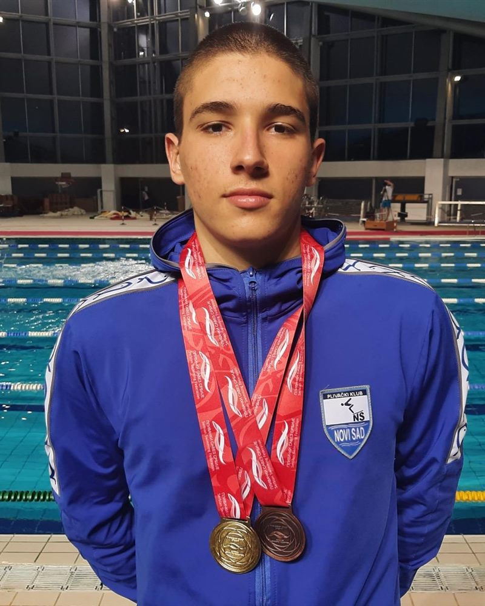
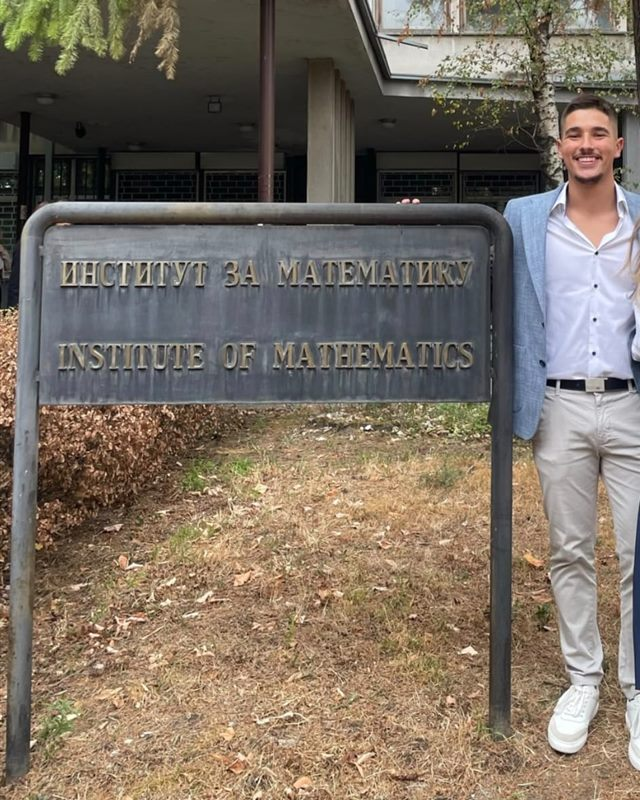
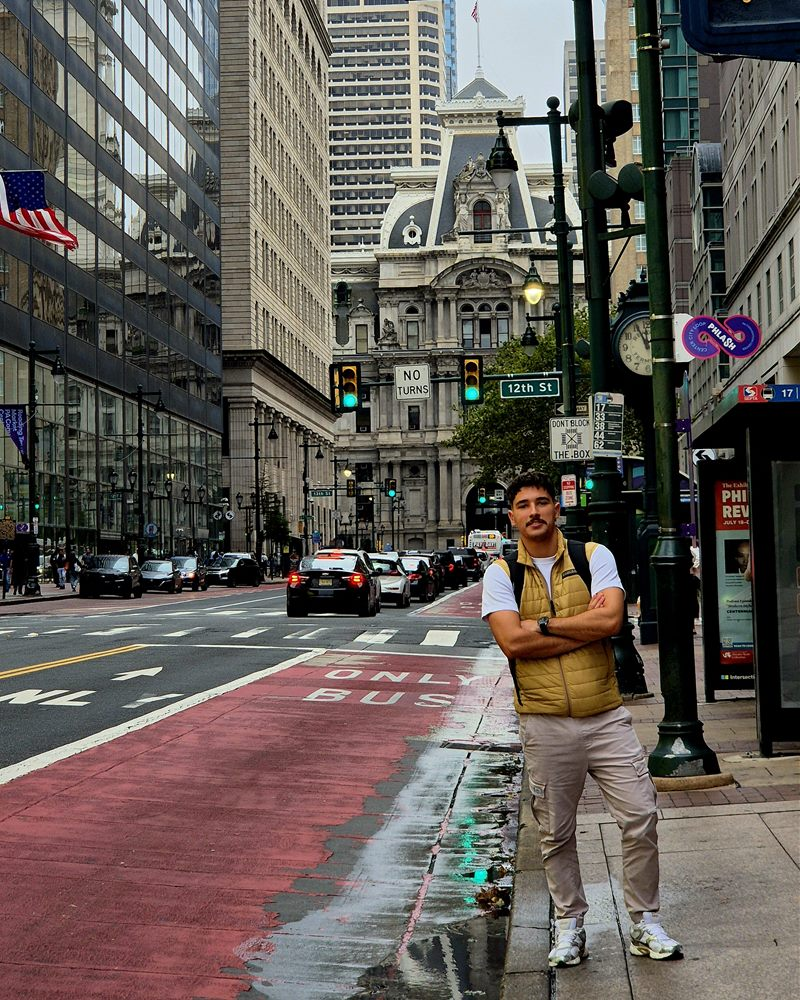
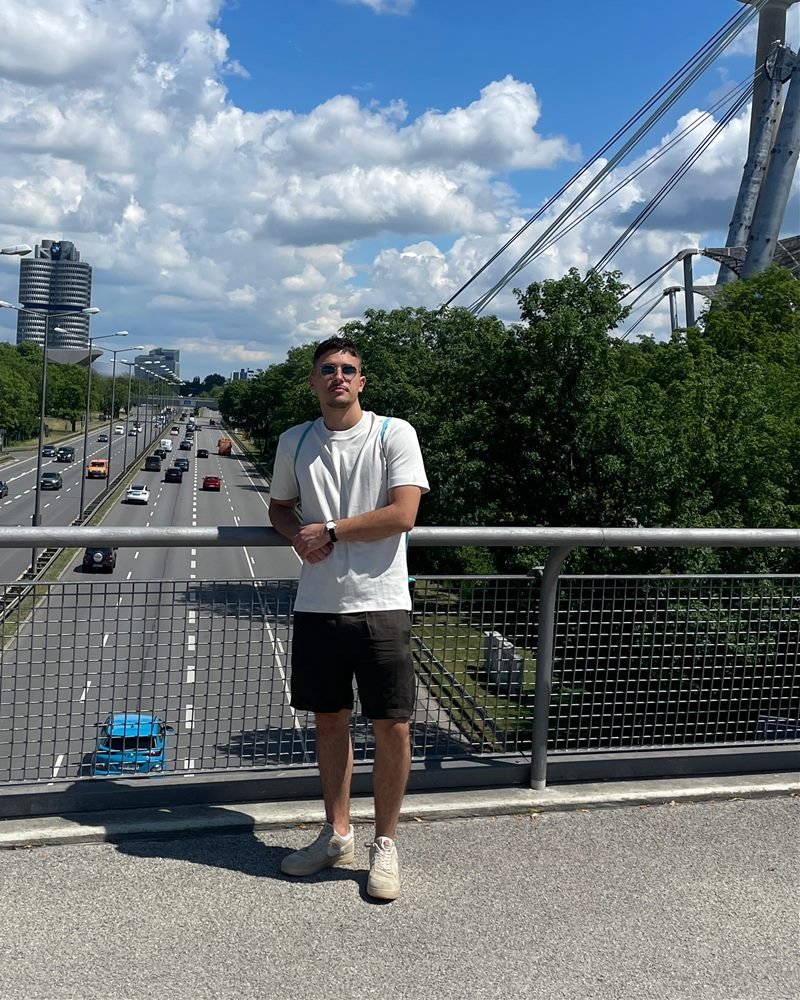

From the pool to the pipeline.
Swimming taught me discipline, persistence and teamwork.
Today I apply all three to statistics and machine learning.
The pool
Swimming was introduced to me on a doctor's advice at the age of five. By ten, I was training five times a week. At twelve, I won five golds and a bronze at the national championships (in my defence, the bronze was in a relay).
In March 2019, at fifteen, I competed for Serbia's junior national team in Zagreb, where I placed second in the 200 m butterfly. Just a week earlier, at the trials for that meet, our PK Novi Sad relay set a national junior record in the 4×200 m freestyle.
Somehow, my main event ended up being the 200 m butterfly, which is basically the hardest stroke for as far as they're allowed to make you swim it. As a senior, I placed second in the event at the 2023 Serbian championships, and in 2024 I improved on that time, though against an international field I finished fourth.
Over the years, I have trained at camps alongside European champions and collected around 350 medals and seven trophies. I still swim twice a week in Munich, and with my club whenever I am back in Serbia.
My best 50 m freestyle is 24.59. You can try to beat it.

Applied mathematics
I completed my bachelor's in applied mathematics, specialising in statistics and data analytics, and graduated second in my class. Over the years, clearing every exam in the first summer sitting left my summers free for machine learning internships at DunavNET.
For my thesis, I chose to bring both of my worlds together in a statistical analysis of how a change in age categories affects the development of junior swimmers.
Beyond the curriculum, I never missed the semi‑annual student quiz and went on to win the Faculty of Sciences' 2023 Science Slam on Zlatibor.

A master's on hold
In 2024, I enrolled in the master's programme in Artificial Intelligence at the University of Novi Sad. Shortly after the semester began, the nationwide anti‑corruption student movement brought university activity to a halt. I joined the protests and served several times as moderator of the student plenum, the open assembly in which we deliberated on the future of the country, preparing and chairing meetings of up to 300 people.
With classes suspended, I used the time to join the Work & Travel programme in the United States and to apply to LMU Munich.
Even after moving to Munich, I stayed involved. Ahead of Serbia's October 2026 parliamentary elections, in which the Student List went on to win a majority, I carried out the statistical analysis of the data gathered in our nationwide door‑to‑door campaign.
A summer in Maryland
In Maryland, I started out in the kitchen of a busy restaurant with no prior hospitality experience, before moving onto the dining floor as a server. In the US, being a server is pretty much working in sales, driven by upselling, weekly rankings, and performance bonuses. I thrived on that competition and was promoted to lead server within a few weeks.
Over seven weeks, I averaged more than $7,500 in personal sales per week, bringing in over $50,000 in total. The job was a crash course in reading people quickly and adapting my approach on the spot. Even a table that found a bug in their salad left a 23% tip.
Meanwhile, between shifts and sharing a place with four close friends, I studied for and completed LMU's three-stage admission process for the Statistics and Data Science master's.

Munich
When I started at LMU, I was undecided between machine learning and econometrics and took courses in both. Implementing Word2Vec from scratch before my second semester settled the question in favour of machine learning. To qualify for a scholarship, I completed 57 ECTS in my first year and passed every exam on the first attempt.
Natural language processing quickly became my main focus, and I reached out to my professor to ask if I could take on a research project. I ended up contributing to ALMA, a larger project on the cross‑lingual alignment of medieval texts, and I am now writing a paper on my part of the work.
For the programme's mandatory consulting project, I chose to work on agentic RAG to build hands‑on skills with modern retrieval systems.
See the projects.

The other side of the stopwatch
When the 2026 European Junior Swimming Championships came to Munich a week before my exams, Serbia's junior head coach knew I was in town and asked me to join the coaching staff. Careful planning made both work, and I got to follow the races from the other side of the stopwatch.